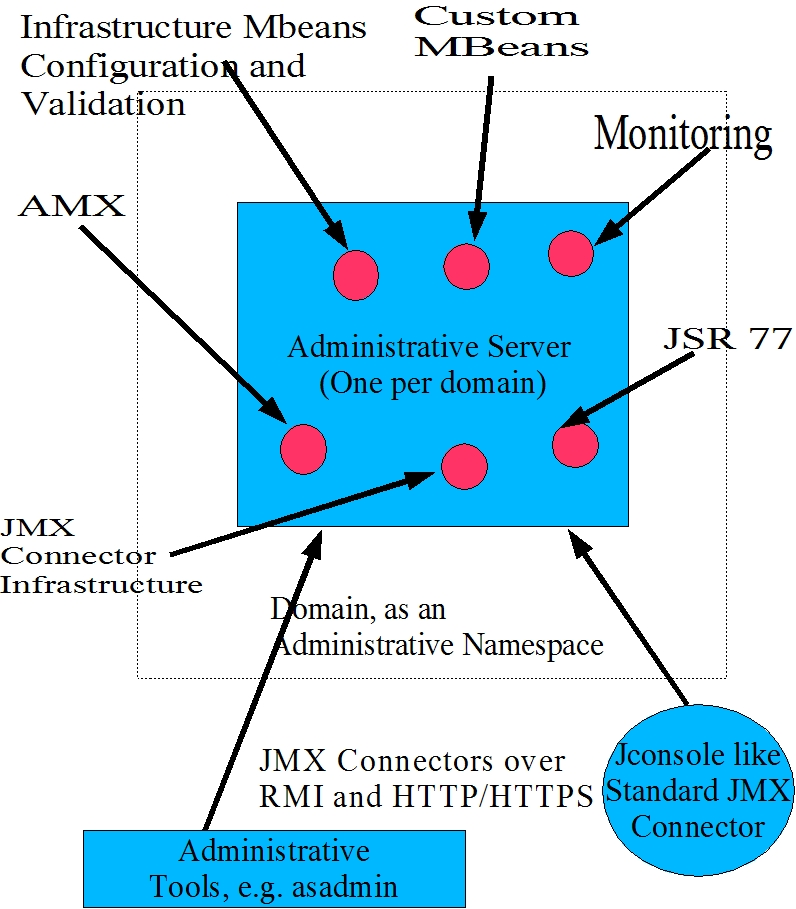

| The majority of the GlassFish code is available under the Common Development and Distribution License (CDDL) v1.0 The following page contains details about the components in GlassFish and the licenses under which they are covered. |
The overall infrastructure can be represented
in the following diagram:
Following are the areas that cover the principal components of administrative infrastructure
| Subcomponent | CVS Location | Comments, Other links etc. |
| Configuration Management | admin-core/config-api appserv-commons/config admin-core/admin admin-core/dtds |
|
| JMX Connector Infrastructure | jmx-remote/rjmx-impl appserv-core/src/java/c/s/e/admin/server/core |
|
| Domain Lifecycle Management | ||
| Appserver Process Control (Launcher) | ||
| JSR 77 Implementation | ||
| Monitoring Framework | ||
| Custom MBean Framework | ||
| Operating System Interfacing | ||
| Public and Private MBeans |
Specifications:
{specs}
General information:
{general}